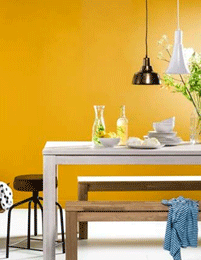

-
CLASSIC
시대를 초월한 가치와 보편성을 갖는 고전적 혹은 전통적이라는 의미의 클래식은 유행에 크게 좌우되지 않는 편이지만 다소의 기복은 무시할 수 없다.
자세히보기
-
NATURAL
자연 분배. 모발의 자연 성장 패턴과 관련한 HAIR가 난 방향 자연스러운 상태. 옷감에서는 표백하지 않은 상태와 색의 올을 가리킨다.
자세히보기 -

UNIQUE
유례가 없는 독창성이 풍부한 디자인을 말한다. 대부분의 경우 그 독창성을 좋은 평가의 뜻으로 쓰인다.
자세히보기 -
CHIC
절제된 단순미와 부드럽고 도시적인 지성미를 느끼게 하는 이미지. 조화, 차분, 고상, 도시, 성숙의 이미지이다.
자세히보기 -
ROMANTIC
부드럽고 사랑스러운 이미지. 색조는 연한(PALE)톤, 밝은(LIGHT)톤, 밝은 회색(LIGHT GRAYSHI) 톤 등으로 밝고 가벼우며 부드럽게 표현한다.
자세히보기